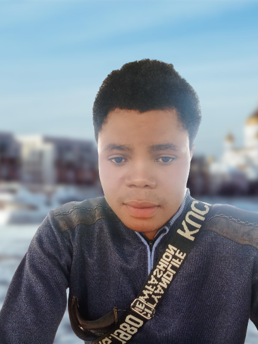

Michael David Innocent | WDD 130
Hello! My name is Michael David Innocent and I am from Nigerian, Ebonyi State. I enjoy reading, and food includes game play. I love to learn a new thing, and my purpose is to become web designer. Life is all about to learn a new skills that can bring impact into future generation, because i have come to understand that technology is a future we can embrace it now before it growth to late, just because oppurtinuty comes but once.